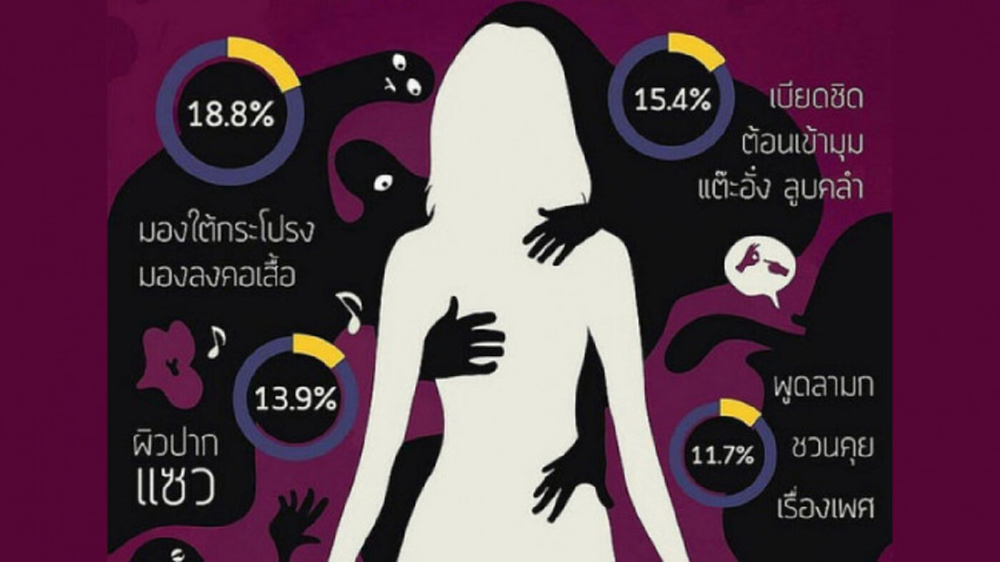

โทษของการล่วงละเมิดทางเพศ
ล่วงละเมิดทางเพศเด็ก เรื่องที่ผู้ใหญ่ต้องป้องกัน!!
การล่วงละเมิดทางเพศที่เกิดจากบุคคลภายในครอบครัว มักถูกนำมาพบบุคลากรทางการแพทย์ เนื่องจากการถูกล่วงละเมิดมักเกิดขึ้นเป็นเวลานานและมีผลกระทบต่อเด็กอย่างรุนแรง ซึ่งต้องการการบำบัดฟื้นฟูระยะยาว
ผู้ล่วงละเมิดต่อเด็กมักเป็นบุคคลที่เด็กรู้จัก สามารถเข้าถึงตัวเด็กได้ และมักเป็นบุคคลที่เด็กไว้วางใจและมีอำนาจเหนือเด็ก เช่น ผู้ปกครอง ญาติพี่น้อง ครู เป็นต้น
ถ้าเด็กบอกว่าถูกล่วงละเมิดทางเพศ ให้เชื่อไว้ก่อนว่าเป็นความจริง เด็กบางคนอาจไม่กล้าบอกเมื่อถูกล่วงละเมิดทางเพศ แต่การเปลี่ยนแปลงทางพฤติกรรมและอารมณ์บางอย่างอาจเป็นข้อบ่งชี้ ซึ่งผู้ปกครองควรสังเกตบุตรหลานของตน
ลักษณะของการล่วงละเมิดทางเพศ มีรูปแบบต่างๆดังนี้
- การล่วงละเมิดโดยไม่มีการสัมผัส ได้แก่
- การเปิดอวัยวะเพศให้เด็กดู
- การให้เด็กดูภาพหรือวิดีโอโป๊
- การสำเร็จความใคร่ต่อหน้าเด็ก
- การทำกิจกรรมทางเพศให้เด็กดู
- การล่วงละเมิดโดยการสัมผัส
- การสัมผัสกอดจบลูบคลำร่างกายหรืออวัยวะเพศของเด็ก
- การให้เด็กลูบคลำจับต้องอวัยวะเพศของผู้ใหญ่ หรือให้เด็กสำเร็จความใคร่ให้
- การสอดใส่อวัยวะเพศ หรือสิ่งของอย่างอื่นทางช่องคลอด หรือ ทวารหนัก หรือ ทางปาก ของเด็ก
- การใช้เด็กเพื่อหาผลประโยชน์
- การใช้เด็กในการถ่ายภาพหรือวิดีโอโป๊
- การใช้เด็กค้าประเวณี
ผลกระทบของการทารุณกรรมทางเพศต่อเด็ก
การทารุณกรรมทางเพศมีผลต่อเด็กทั้งในระยะสั้นและระยะยาว โดยเฉพาะถ้าเกิดจากบุคคลใกล้ชิด เช่น บิดา
- ผลกระทบต่อพฤติกรรมทางเพศ
เด็กที่ถูกล่วงละเมิดทางเพศและถูกกระตุ้นทางเพศก่อนวัยอันควร จะส่งผลกระทบทำให้เด็กมีพฤติกรรมที่ยั่วยวนทางเพศ เด็กเล็กอาจแสดงออกมาโดยการสำเร็จความใคร่บ่อยๆ ในเด็กวัยรุ่น อาจมีความสำส่อนทางเพศ
.jpg)